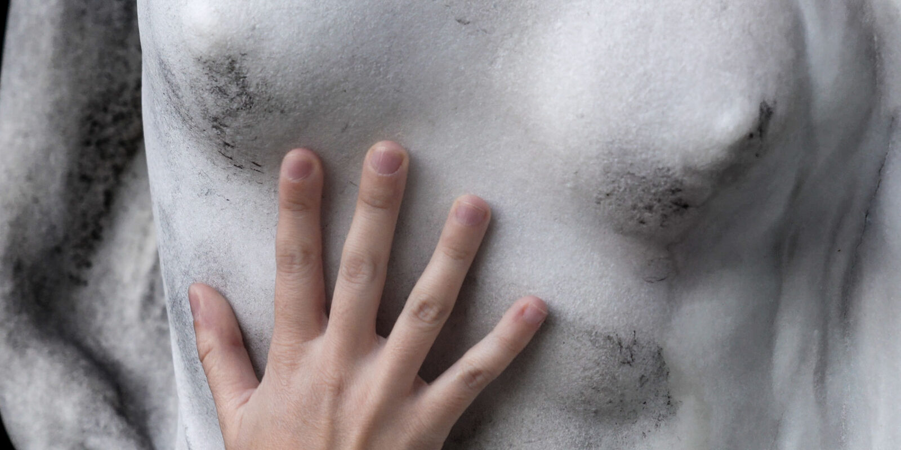
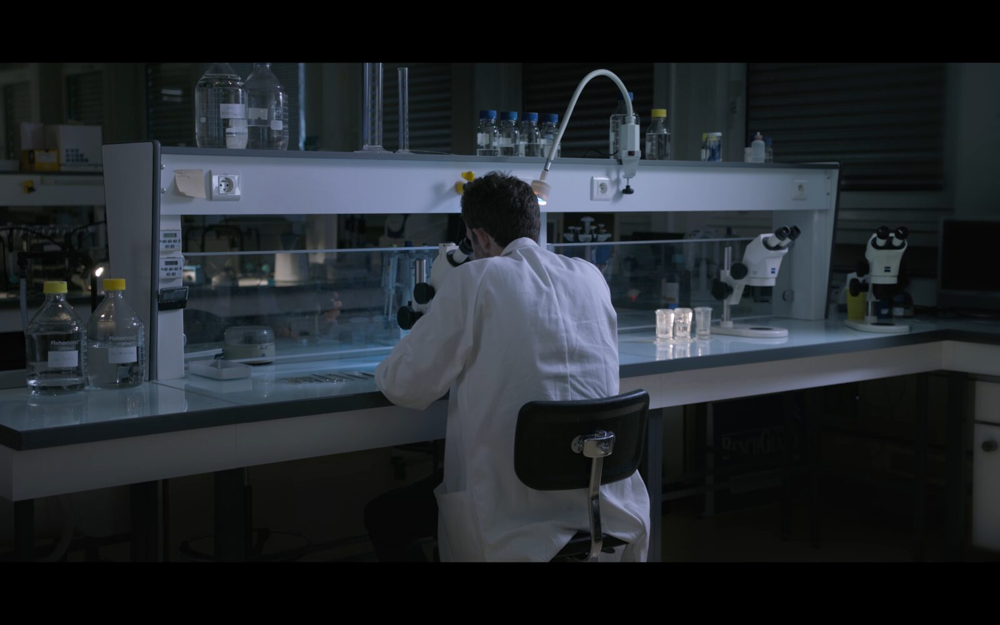

Fiction expérimentale
Tirésias
Inspiré de Tirésias, changé en femme avant de retrouver son corps. Un laboratoire de biologie étudie les cloportes et la bactérie Wolbachia, qui féminise les cloportes mâles en variations intersexes. Le film explore poétiquement la métamorphose du sexe, à la lisière des enjeux scientifiques et sociaux, étirant l'instant de la transformation pour interroger les identités.